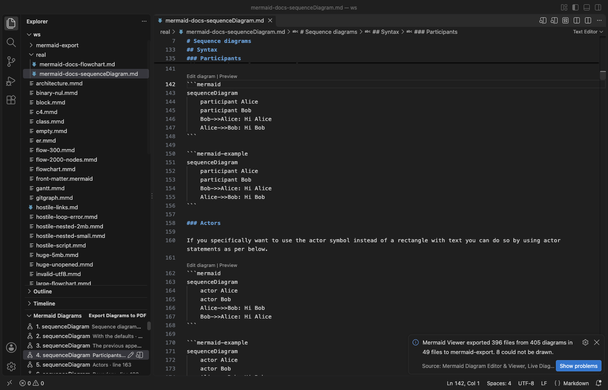

Open files in VS Code and Cursor / Docs and diagrams
Find and edit the Mermaid diagrams in a long Markdown file
In a long Markdown file, mermaid blocks are hard to find and hard to edit, because you only see the text. Mermaid Viewer adds a Mermaid Diagrams list to the VS Code Explorer with every diagram of the open file and the heading above it. Click a row to jump there. "Edit diagram" above each block opens it next to a live preview with completion and error underlines, and saving writes the text back into the Markdown file. Zovo Pro (USD 19 once) adds export on save, export of all diagrams in the workspace and PDF export, with 3 free tries each.
Free, MIT license. Extension ID zovo.mermaid-viewer, version 0.3.4. Needs VS Code 1.90.0 or newer.

Steps in VS Code
- Install Mermaid Viewer from the Marketplace, or press Ctrl+P (Cmd+P on macOS) and run
ext install zovo.mermaid-viewer. - Open the Markdown file. The Mermaid Diagrams list appears at the bottom of the Explorer when the file has a mermaid block.
- Click a row in the list to jump to that diagram. Each row shows its number, diagram type and the heading above it.
- Click "Edit diagram" above the block. It opens as a small
.mmdfile next to a live preview, with completion and a red underline on errors. - Edit and save. The text goes back into its block, and the Markdown file is saved too when it had no other unsaved changes. Undo in the Markdown file takes the change back.
- To see all diagrams at once, click the preview icon on the Markdown file. Each diagram shows with its own error line and export buttons.
Where Zovo Pro saves time
The Mermaid Diagrams list, "Edit diagram" and "Preview" above each block, the live preview, completion, error underlines and PNG and SVG export of one diagram are free. Nothing about Pro shows when you open a file.
Sites and wikis that do not draw mermaid blocks need image files, and those go stale when the text changes. Export on Save keeps SVG or PNG files next to the source up to date. For README.md it writes README-1.svg, README-2.svg and so on, and it draws again only the diagrams whose text changed, so saving a long document stays fast. The other Pro tools export every diagram in the workspace and put every diagram of a file in one PDF.
With Export on Save (Zovo Pro)
- Run "Mermaid Viewer: Export on Save: Keep SVG/PNG Next to the Source Up to Date (Pro)" from the Command Palette.
- Pick SVG, PNG or both.
- Save the Markdown file. The images appear next to it. One window session counts as one try.
Export on Save works 3 times on your computer before it asks for a license, and a try counts only when you get a result. Opening a file shows no popup and no countdown.
Zovo Pro costs USD 19 once. It is not a subscription, and it turns on the Pro tools in every Zovo extension, not only Mermaid Viewer. After a card payment (Stripe) your license key shows on the next page. In VS Code, run "Zovo Pro: Enter Zovo Pro license key" from the Command Palette and paste it. The key is checked on your computer, with no network call. With GitHub Sponsors, pick the "$19 one time" tier, then run "Zovo Pro: I already paid: unlock with GitHub Sponsors" and sign in with the same GitHub account. With PayPal, send USD 19 with "Zovo Pro" in the note and the key comes by email within a day.
A team of 5: USD 59 once, by card or by PayPal. Every rule and every Pro tool is on the Zovo Pro page.
Steps in Cursor, Windsurf or VSCodium
- Open the Extensions view with Ctrl+Shift+X (Cmd+Shift+X on macOS).
- Search for
zovo.mermaid-viewerand click Install. Cursor, Windsurf and VSCodium install from Open VSX, where it is published aszovo/mermaid-viewer. - If your editor has no gallery, download the .vsix from the Open VSX page and run "Extensions: Install from VSIX...".
- Then use it the same way as in VS Code.
What Mermaid Viewer handles
- Mermaid blocks in Markdown files, and
.mmdand.mermaidfiles. - Long documents, such as a file with 200 diagrams, which the preview lists in about 5 seconds.
- A block that was changed in the Markdown file while its editor was open. The editor loads the new text.
What it does not do
- It does not add diagrams to VS Code's own Markdown preview. It opens its own preview panel.
- If the block was deleted from the Markdown file, saving the block editor writes nothing and says why.
- Diagrams over 500,000 characters or 2,000 links are not drawn until you raise the setting.
Other options
- Markdown Preview Mermaid Support. A free extension that draws mermaid blocks inside VS Code's built-in Markdown preview. It has no list of diagrams and no block editor.
- Mermaid Live Editor. The web editor from the Mermaid project. You copy one block in and the result back out.
Install counts and Open VSX status were checked on 13 November 2026. Descriptions in quotes are the extensions' own.
Questions
Can I turn off the "Edit diagram" links?
Yes. Set mermaidViewer.codeLens to false.
What if my blocks use another language name?
Add it to mermaidViewer.languageIds. Blocks fenced as mermaid work by default.
Is the outline free?
Yes. The Mermaid Diagrams list is part of viewing and stays free.
Does it work in Cursor or Windsurf?
Yes. Cursor, Windsurf and VSCodium install extensions from Open VSX. Search for the extension in their Extensions view and install it there.
More about Mermaid Viewer
Read the Mermaid Viewer page for every feature and setting, or the source code on GitHub.
Related guides
- Mermaid Diagram Editor & Viewer on the VS Code Marketplace (also on Open VSX). Live Mermaid preview beside the code, with PNG and SVG export.
- Preview Mermaid diagrams in VS Code
- Export a Mermaid diagram to PDF
- Find the line with the Mermaid syntax error
- Preview a reStructuredText (.rst) file in VS Code
Zovo Pro and support
Zovo Pro: USD 19 once, every Zovo viewer. It turns on the Pro tools in this extension and in the other Zovo extensions you use. The free features stay free.
After a card payment your license key shows on the next page. Paste it with the command "Zovo Pro: Enter a key".
You can also support the work with no Pro:
Need your format supported?
Open a format request with a sample file, and I reply there whether it can be done. For USD 299 once, through this GitHub Sponsors tier, I add your file format or a missing feature to this extension, with tests, within 7 days.